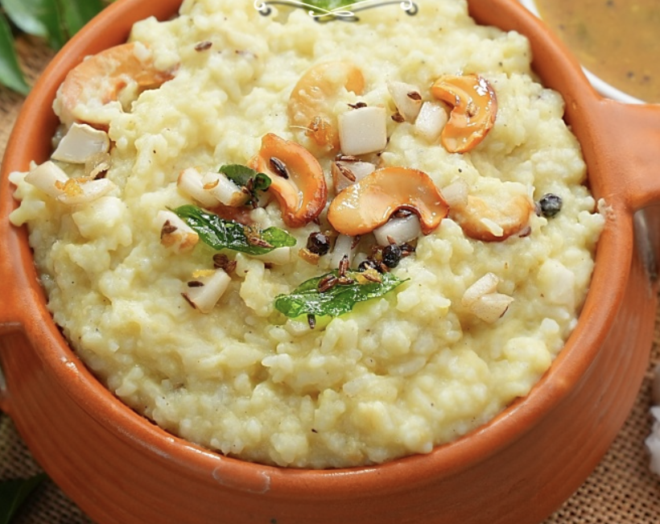

Coconut Milk Pongal Recipe
Coconut Milk Pongal is a creamy and flavorful South Indian dish made with rice and moong dal cooked in rich coconut milk. Enhanced with aromatic spices, cashews, fresh coconut chunks, and a tempering of ghee, pepper, and curry leaves, it offers a comforting and mildly spiced taste, perfect for festive or everyday meals.
Ingredients
- 1 cup Chitti Mutyalu Rice (or any other rice) – soaked for 1 hour
- 1/2 cup Moong dal (soaked for 1 hour)
- 1/2 tsp Black Pepper Powder
- Salt (to taste)
- 2.5 cups Second Extract Coconut Milk
- 2 cups Second Extract Coconut Milk (for later addition)
- 1/2 tsp Jaggery (optional)
- 1/8 tsp Nutmeg Powder
- 1 pinch Turmeric Powder (optional, for colour enhancement)
Tempering:
- 3 tbsp Ghee
- 3 tbsp Oil
- 1 tbsp Black Pepper
- 1 tbsp Cumin Seeds
- 1/4 cup Cashews
- 1 tbsp Ginger (finely chopped)
- 1/8 tsp Hing (Asafoetida)
- 1/4 cup Fresh Coconut Chunks
- 2 sprigs Curry Leaves
Preparation
- Cooking the Rice and Dal: 1). In a pressure cooker, add the soaked rice and moong dal. 2). Pour 2.5 cups of second extract coconut milk, add black pepper powder, salt, and close the lid. 3). Cook on a medium flame for 4 whistles. 4). Once done, let the pressure release naturally. Open the lid and mash the mixture well.
- Enhancing the Flavour: 1). Add 2 more cups of second-extract coconut milk to the mashed rice. 2). Mix in jaggery (optional), nutmeg powder, and a pinch of turmeric powder. 3). Sauté and cook for 3-4 minutes until everything is well combined.
- Preparing the Tempering: 1). In a pan, heat ghee and oil. 2). Add black pepper and let it splutter. 3). Add cumin seeds and let them splutter as well. 4). Toss in cashews and sauté until golden brown. 5). Add chopped ginger, hing, and fresh coconut chunks. 6). Fry until the coconut turns light golden. 7). Finally, add curry leaves and sauté well.
- Bringing Everything Together: 1). Pour the prepared tempering over the coconut pongal. 2). Mix well and allow it to rest for 2-3 minutes to absorb the flavours. 3). Serve hot with Miriyala Pappucharu or Karnataka-style Draksha Gojju for an unforgettable meal.